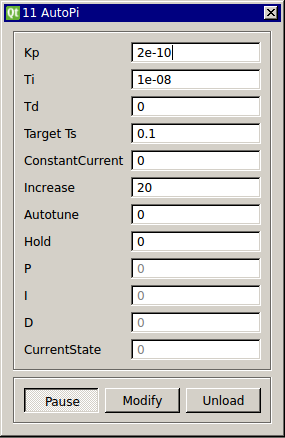

Requirements: Spike Detector
Limitations: None

This module controls the Intespike interval (ISI) of a neuron using a Proportional Integral controller. The model automatically tunes the PI controller parameters to the neuron. The goal of the PI controller is to make small changes in current at each action potential onset to maintain the neuron at a target firing rate. This spike rate controller is designed to offset drift in the firing rate on the order of 10s of seconds to minutes. This module requires input from the “Spike Detector” module.
The module automatically calculates a first order model for the ISI as a function of the applied current. Given the first order model, it solves the coefficients for the critically damped solution of the proportional-integral controller with the constraint that the proportional coefficient is 1/100 of the Integral coefficient, to assure small changes with each spike.
Once a cell is patched, the spikes are detected with the spike detector module. The spike detector is connected to the input of the Auto-PI module and the Auto-PI’s output is sent back to the neuron. Set the desired ISI, set AUTOTUNE = 1 and unpause the module. The module will automatically apply a set of current steps to find an applied current to make neuron fire near the target firing rate, then it perturbs the current measuring the neuron’s response in time with each change. Once a first order model is fit to the neuron’s response, the AUTOTUNE turns off, setting the coefficients and switches automatically to closed loop control. Within about 10 spikes, the neuron should be close to the target firing rate.
Reference: Miranda-Domínguez O, Gonia J, Netoff TI. Firing rate control of a neuron using a linear proportional-integral controller. J Neural Eng. 2010 Dec;7(6):066004.